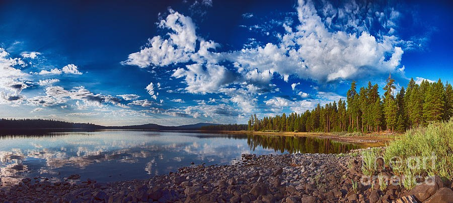
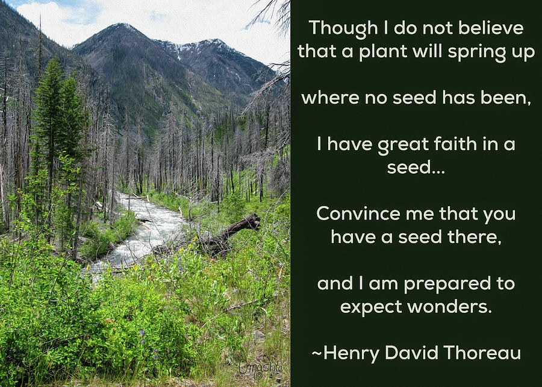
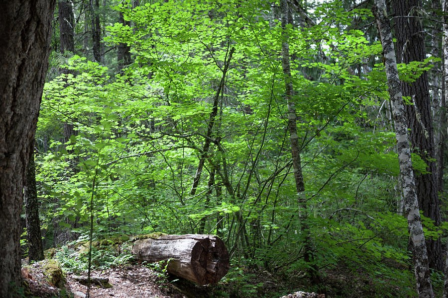
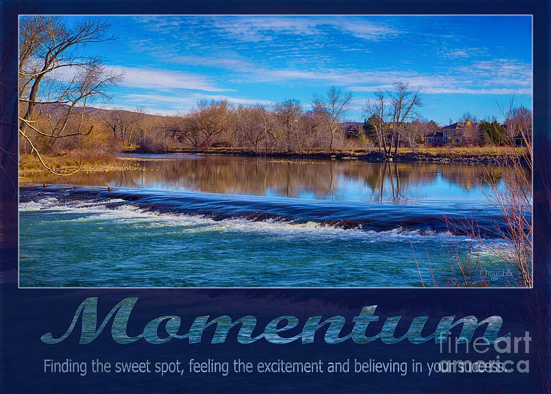
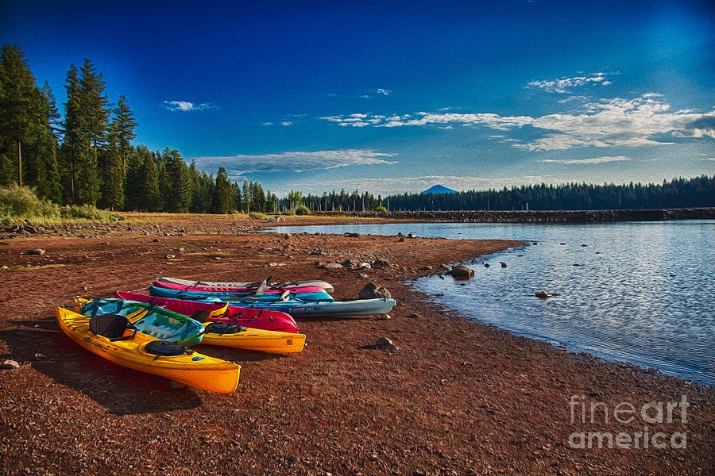
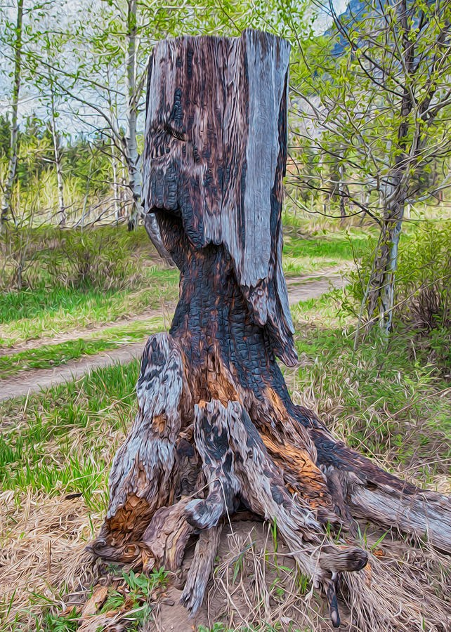
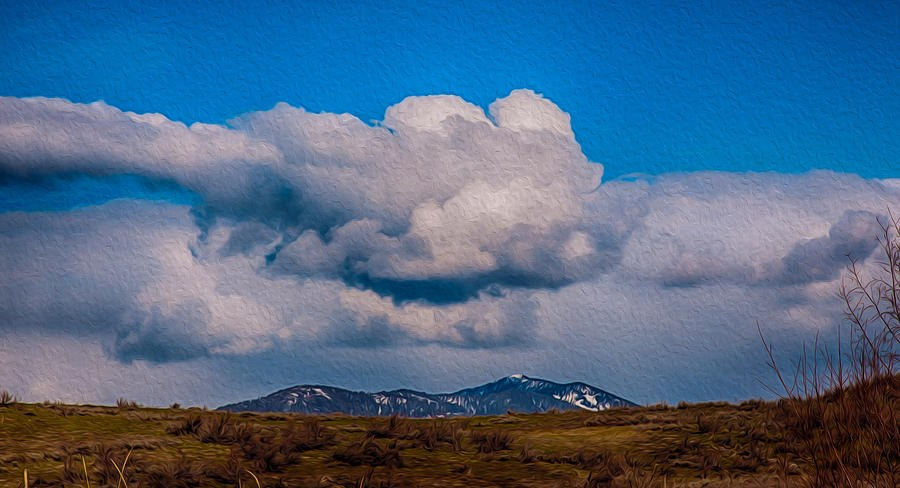
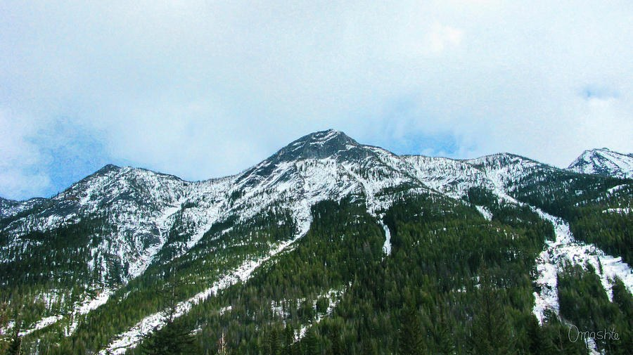
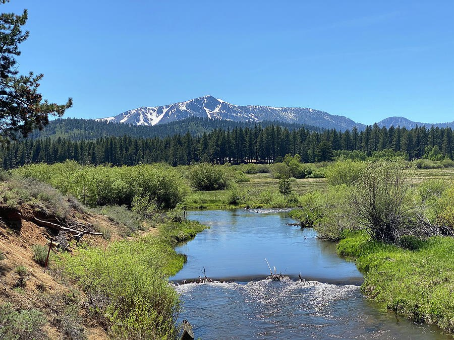
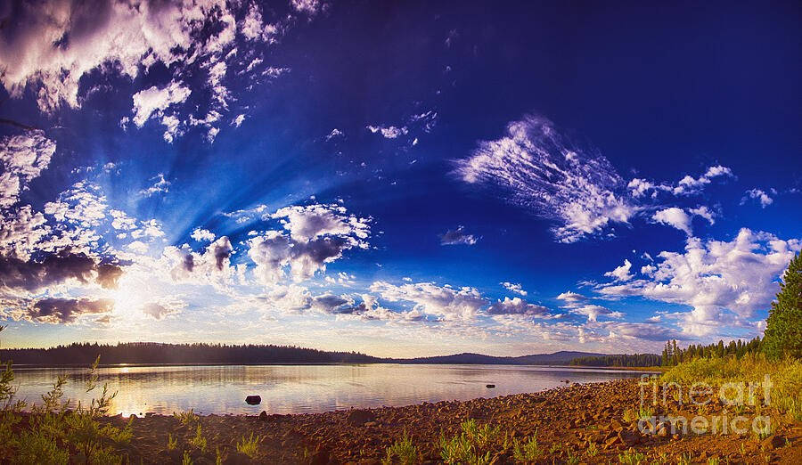

Gallery · 131 pieces
Pacific Northwest Landscapes
Places you can stand in: the Methow Valley, the North Cascades, and the rivers and trails between them.
These are named places in the Methow Valley and the North Cascades of Washington State, where I spend part of my time: rivers, trails, valleys and the mountains above them.
If you have stood in one of these places, you may recognise it. Open any piece to read where it is.
There are 131 pieces here. Most are horizontal. The colours that come up most are blue, green and brown. They suit rooms like the living room and the lodge, inn & rental. Narrow them by colour and shape below, and see any of them on a wall at its real size.
By place: Methow Valley · North Cascades · Winthrop · Mazama · Twisp
 Across to the Green Clearing, Wooden Footbridge in Pines
Across to the Green Clearing, Wooden Footbridge in Pines Barefoot at the Blue River, Boy on a Rocky Bank
Barefoot at the Blue River, Boy on a Rocky Bank Bend in the Path, White-Barked Trees in Spring Green
Bend in the Path, White-Barked Trees in Spring Green Between the Pines, Wildflower Hillside
Between the Pines, Wildflower Hillside Blue Ribbon Valley - Painterly Mountain Landscape
Blue Ribbon Valley - Painterly Mountain Landscape Blue Ridges Beyond the Pine, Snowy Mountain Landscape
Blue Ridges Beyond the Pine, Snowy Mountain Landscape Blue Stillness, Granite Dome Above Snowy Pines
Blue Stillness, Granite Dome Above Snowy Pines Blush Peak, Painterly Mountain and River
Blush Peak, Painterly Mountain and River Blush Stone Bank, Vertical River Landscape
Blush Stone Bank, Vertical River Landscape Boulder Line, Painterly River and Forest
Boulder Line, Painterly River and Forest Bright Peaks, Dry Valley - Painterly Mountain Panorama
Bright Peaks, Dry Valley - Painterly Mountain Panorama Bright Ridge, Dark Firs - Snowy Mountain Panorama
Bright Ridge, Dark Firs - Snowy Mountain Panorama Brushstroke Shore, Blue Stream and Pebbles
Brushstroke Shore, Blue Stream and Pebbles Budding Bend, Painterly River Landscape
Budding Bend, Painterly River Landscape Clear Bend, Blue-Green River and Gravel Bar
Clear Bend, Blue-Green River and Gravel Bar Cloud Shadow Valley, Yellow Wildflower Meadow
Cloud Shadow Valley, Yellow Wildflower Meadow Cloud Trail to the Summit - Snowy Mountain Panorama
Cloud Trail to the Summit - Snowy Mountain Panorama Cobalt Gravel Bar - River and Pines Landscape
Cobalt Gravel Bar - River and Pines Landscape Cobalt Hush, Blue Lake in a Green Valley
Cobalt Hush, Blue Lake in a Green Valley Cobalt Mirror, Fallen Logs Below Snowy Peaks
Cobalt Mirror, Fallen Logs Below Snowy Peaks Cobalt Mirror, Still Lake Landscape
Cobalt Mirror, Still Lake Landscape Cobalt Shore, Lake and Golden Hillside
Cobalt Shore, Lake and Golden Hillside
Cobalt Stillness, Panoramic Lake Under Towering Clouds Cobalt Summit, Snowy Peaks and Evergreen Slopes
Cobalt Summit, Snowy Peaks and Evergreen Slopes Column of Light and Shadow, Cloud Over a Mountain Ridge
Column of Light and Shadow, Cloud Over a Mountain Ridge Dark Buttress, Pale Scree - Rugged Mountain Ridge
Dark Buttress, Pale Scree - Rugged Mountain Ridge Dark Fork Among the Aspens
Dark Fork Among the Aspens Ember Window: Sunset Sky Over Evergreens
Ember Window: Sunset Sky Over Evergreens Evening Mirror - Pond at Dusk
Evening Mirror - Pond at Dusk
Faith in a Seed - River Valley and Thoreau Quote Far Edge of the Meadow, Horses Under a Big Sky
Far Edge of the Meadow, Horses Under a Big Sky First Leaves, Pale Trees in a Spring Meadow
First Leaves, Pale Trees in a Spring Meadow Float Day, Tubers Drifting on a Blue River
Float Day, Tubers Drifting on a Blue River Gilded Shallows, Clear Water Over Pebbles
Gilded Shallows, Clear Water Over Pebbles Gold Beneath the Ripples, Water Over Stones
Gold Beneath the Ripples, Water Over Stones Gold on Still Water, Mountain Lake in Autumn
Gold on Still Water, Mountain Lake in Autumn Gold on the Far Bank, River Landscape
Gold on the Far Bank, River Landscape Golden Current, Rippling Water Over Stones
Golden Current, Rippling Water Over Stones Golden Valley Under a Swirling Sky
Golden Valley Under a Swirling Sky Granite in Blue: Snow-Dusted Mountain Above Evergreens
Granite in Blue: Snow-Dusted Mountain Above Evergreens Green Among the Gold: Dry Grass on Icy Blue Water
Green Among the Gold: Dry Grass on Icy Blue Water Green and Gold Understory, Forest Hillside
Green and Gold Understory, Forest Hillside Green Bend, Forest River With Boulder
Green Bend, Forest River With Boulder Green Beyond the Stones, Forest Creek Bed
Green Beyond the Stones, Forest Creek Bed Green Corridor - Forest Trail Through Pale Trunks
Green Corridor - Forest Trail Through Pale Trunks Green Hideaway, Rustic Roof and Quiet Lake
Green Hideaway, Rustic Roof and Quiet Lake Hammered Light: Rippling Water Over Stones
Hammered Light: Rippling Water Over Stones Into the Tall Trees, Child on a Forest Path
Into the Tall Trees, Child on a Forest Path Lacework Canopy, Pine Forest Trail
Lacework Canopy, Pine Forest Trail
Lantern Leaves: Backlit Forest Canopy with Sawn Log Lavender Hush: Snowy Blue Ridges Panorama
Lavender Hush: Snowy Blue Ridges Panorama Lone Pine at the Crest, Rock Cliff Against Blue Sky
Lone Pine at the Crest, Rock Cliff Against Blue Sky Long Blue Ridge, Snowy Mountain Panorama
Long Blue Ridge, Snowy Mountain Panorama Low Over the Water, Geese Above a Green River
Low Over the Water, Geese Above a Green River Lupine Doorstep, Timber Cabin in a Purple Meadow
Lupine Doorstep, Timber Cabin in a Purple Meadow Lupine Hill Overlook, Blue Lake Valley
Lupine Hill Overlook, Blue Lake Valley Mirror Hour, Painterly Lake Reflection
Mirror Hour, Painterly Lake Reflection
Momentum - Teal Weir Under a Cobalt Sky One Small Drift: Hot Air Balloon Above Snowy Mountains
One Small Drift: Hot Air Balloon Above Snowy Mountains One Small Tree, Big Sky - Grassy Valley Landscape
One Small Tree, Big Sky - Grassy Valley Landscape
Paddle Pause - Colorful Kayaks on a Rust Red Shore Pale Grove, Aspens Along a Forest Trail
Pale Grove, Aspens Along a Forest Trail Parked at the Pines, Footbridge Into the Forest
Parked at the Pines, Footbridge Into the Forest Pencil Point, Beaver-Gnawed Stump by the River
Pencil Point, Beaver-Gnawed Stump by the River Pillar Over the Golden Valley, Smoke Plume and River
Pillar Over the Golden Valley, Smoke Plume and River Pink Plume Over a Turquoise River
Pink Plume Over a Turquoise River Plum Ridges Panorama - Purple Mountain Valley
Plum Ridges Panorama - Purple Mountain Valley Quiet Anchor: Sailboat Beneath Glowing Clouds, Panoramic Lake
Quiet Anchor: Sailboat Beneath Glowing Clouds, Panoramic Lake Quiet Meadow, Big Sky - Craggy Mountain Landscape
Quiet Meadow, Big Sky - Craggy Mountain Landscape Quiet Spring Below the Snow - Adobe House and Tipi
Quiet Spring Below the Snow - Adobe House and Tipi Quiet Summit, Snowy Peak Over Evergreen Ridges
Quiet Summit, Snowy Peak Over Evergreen Ridges Red Hat at the Far End of the Footbridge
Red Hat at the Far End of the Footbridge Road to the Snowline, Mountain Valley Landscape
Road to the Snowline, Mountain Valley Landscape Room for Two, Rustic Swing in a Golden Green Clearing
Room for Two, Rustic Swing in a Golden Green Clearing Root Dancer, Weathered Stump on Granite
Root Dancer, Weathered Stump on Granite Root Web, Driftwood on a Green River
Root Web, Driftwood on a Green River Rust Slopes Above the Patchwork Valley
Rust Slopes Above the Patchwork Valley Saved Seat, Picnic Table by the River
Saved Seat, Picnic Table by the River Shelter in the Pines, Log Pavilion
Shelter in the Pines, Log Pavilion Shimmer Along the River, Painterly Pine Forest
Shimmer Along the River, Painterly Pine Forest Silver Crossing, Fallen Logs on a Mountain Pond
Silver Crossing, Fallen Logs on a Mountain Pond Silver Log Bend - Clear River Through Pine Forest
Silver Log Bend - Clear River Through Pine Forest Silver Sleeper - Driftwood in a Clear Stream
Silver Sleeper - Driftwood in a Clear Stream Silver Watcher - Dead Tree on a Granite Ledge Above a Mountain Valley
Silver Watcher - Dead Tree on a Granite Ledge Above a Mountain Valley Skyward Pines, Sunlit Path
Skyward Pines, Sunlit Path Slate Water, Green Wall - River Bend and Pines
Slate Water, Green Wall - River Bend and Pines Small Light, Wide Dusk - Crescent Moon Over Pines
Small Light, Wide Dusk - Crescent Moon Over Pines Spring Sky Over the Pebbled River
Spring Sky Over the Pebbled River Still Standing - Stump Reflected in Sunset Water
Still Standing - Stump Reflected in Sunset Water
Still Standing, Charred Stump and Spring Aspens Stillness Before the Rapids, Boulder Stream
Stillness Before the Rapids, Boulder Stream Stone Blades, Granite Peaks and Clouds
Stone Blades, Granite Peaks and Clouds Stone Edge, Green Current - River Landscape
Stone Edge, Green Current - River Landscape Stones Afloat on a Forest Creek
Stones Afloat on a Forest Creek Stones Beneath the Blue, Clear River Landscape
Stones Beneath the Blue, Clear River Landscape Stones Beneath the Blue, Clear River with Boulders
Stones Beneath the Blue, Clear River with Boulders Stones in the Green Shade, Creek Landscape
Stones in the Green Shade, Creek Landscape Straight to the Mountain, Blue Sky River Landscape
Straight to the Mountain, Blue Sky River Landscape Stripes of Gold, Riverside Meadow
Stripes of Gold, Riverside Meadow Sundown Sprinkler, Painterly Mountain Pasture
Sundown Sprinkler, Painterly Mountain Pasture Swept Sky, Painterly River and Evergreens
Swept Sky, Painterly River and Evergreens Thaw on the Slope, Evergreen Mountainside
Thaw on the Slope, Evergreen Mountainside The Far Bridge, Turquoise Sky Over a Riverside Meadow
The Far Bridge, Turquoise Sky Over a Riverside Meadow The Gathering Circle, Orange Chairs Before a Mountain Barn
The Gathering Circle, Orange Chairs Before a Mountain Barn The Island in the River, Braided River Landscape
The Island in the River, Braided River Landscape The Long Way Up, Gravel Path Through Granite and Young Firs
The Long Way Up, Gravel Path Through Granite and Young Firs The Pond Keeps the Sky - Pines and Peach Clouds
The Pond Keeps the Sky - Pines and Peach Clouds The Quiet Mooring, Panoramic Lake with a Small Boat
The Quiet Mooring, Panoramic Lake with a Small Boat The Quiet Weight of Clouds, Snowy Mountain Valley
The Quiet Weight of Clouds, Snowy Mountain Valley The Shimmering Path - Forest Trail with Two Walkers
The Shimmering Path - Forest Trail with Two Walkers The Slow Bend, Shallow Stream Through Evergreens
The Slow Bend, Shallow Stream Through Evergreens The Standing Snag, Mountain Lake with Two Geese
The Standing Snag, Mountain Lake with Two Geese The Thaw Trail, Panoramic Valley Landscape
The Thaw Trail, Panoramic Valley Landscape The Waiting Chair, Cabin and Lupines
The Waiting Chair, Cabin and Lupines The Way to the Ridge, Split-Rail Fence on a Mountain Trail
The Way to the Ridge, Split-Rail Fence on a Mountain Trail Through the Clear Water: Teal River Over Rocks
Through the Clear Water: Teal River Over Rocks Toward the Light Gap, Blue Stream Through Pines
Toward the Light Gap, Blue Stream Through Pines Under the Big Mountain, Golden Meadow and Cabins
Under the Big Mountain, Golden Meadow and Cabins Under the Big Mountain, Timber Lodge and Pond
Under the Big Mountain, Timber Lodge and Pond Upstream Quiet, Green River Through Evergreen Valley
Upstream Quiet, Green River Through Evergreen Valley Violet River Under a Turquoise Sky
Violet River Under a Turquoise Sky
Weight of Clouds, Snow-Dusted Ridge Panorama Welcome to Winthrop Emporium, Painterly Western Storefront
Welcome to Winthrop Emporium, Painterly Western Storefront Where the Cloud Rests, Misty Evergreen Lake
Where the Cloud Rests, Misty Evergreen Lake Where the River Opens, Turquoise Rapids
Where the River Opens, Turquoise Rapids Where the Snow Begins - Winter Mountain Valley Panorama
Where the Snow Begins - Winter Mountain Valley Panorama
Where the Snow Runs Down, Mountain Peak Above Evergreen Forest
Where the Water Slows, Spring Meadow and Snowy Peak Where the Water Turns White, Teal River Rapids
Where the Water Turns White, Teal River Rapids
Wide Blue Quiet, Sunbeams Over a Still Lake Winding Blue, Aspen and Birch Wetland
Winding Blue, Aspen and Birch WetlandOther collections: Abstract Glass Macro · Contemporary Abstract & Mixed Media · Botanical & Flowers · Butterflies, Birds & Wildlife · Spiritual, Mandala & Symbolic · Travel / Specialty / Projects · Every piece